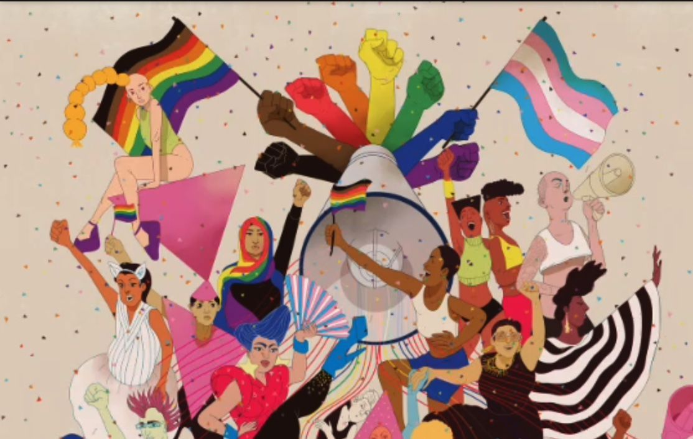

Aquí puedes encontrar:

Justicia de Autoridades Indígenas
Explora los sistemas de justicia propios de los pueblos indígenas y su significado cultural.
Feminismo Interseccional
Análisis del feminismo que considera múltiples ejes de opresión en Latinoamérica.

Colectivo LGBT: Una mirada Social
Conoce de las situaciones sociales que enfrenta la comunidad LGBT actualmente.
Sociedad y Cultura
Reflexiones sobre las dinámicas sociales y culturales en contextos diversos.
Acuerdos de Paz
Estudio de los procesos de paz y su implementación en diferentes contextos.